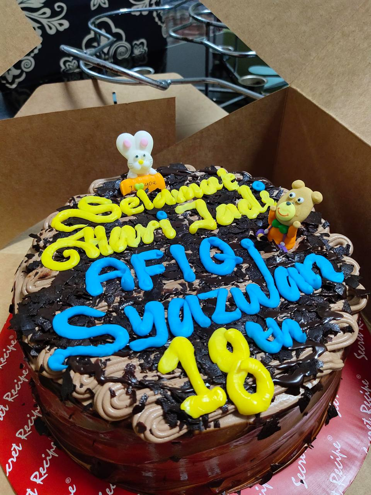
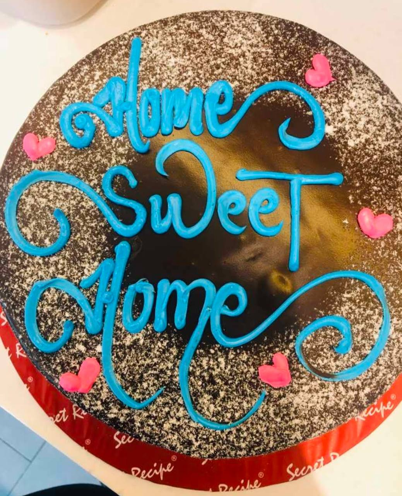
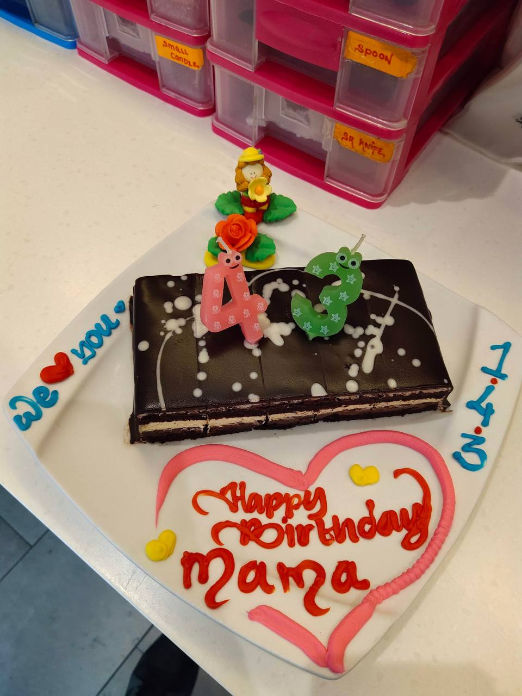
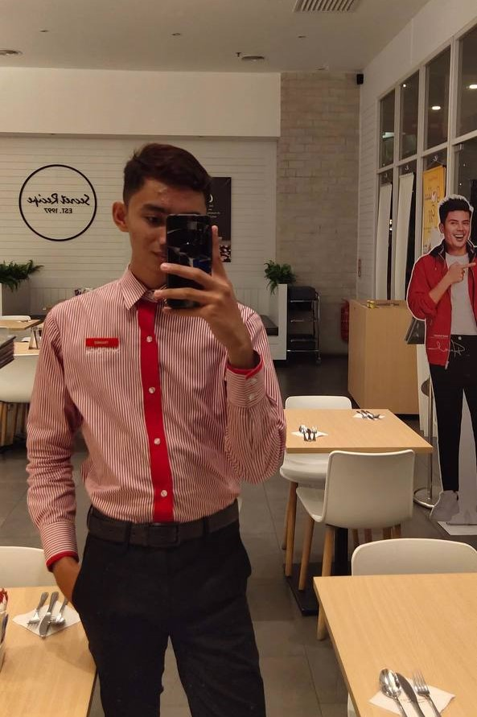
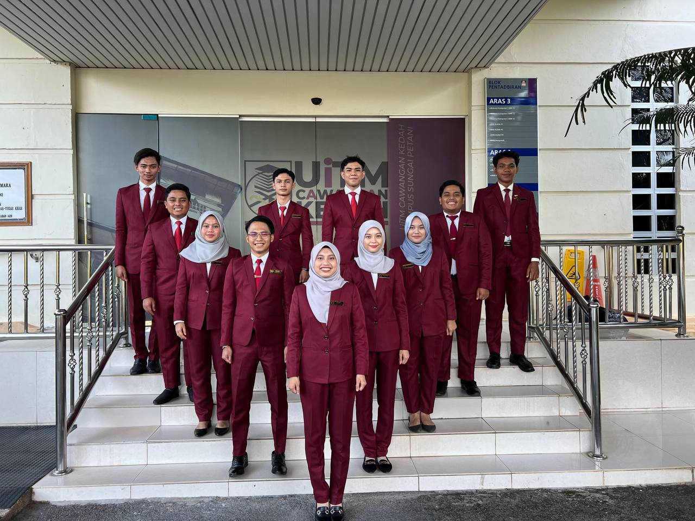
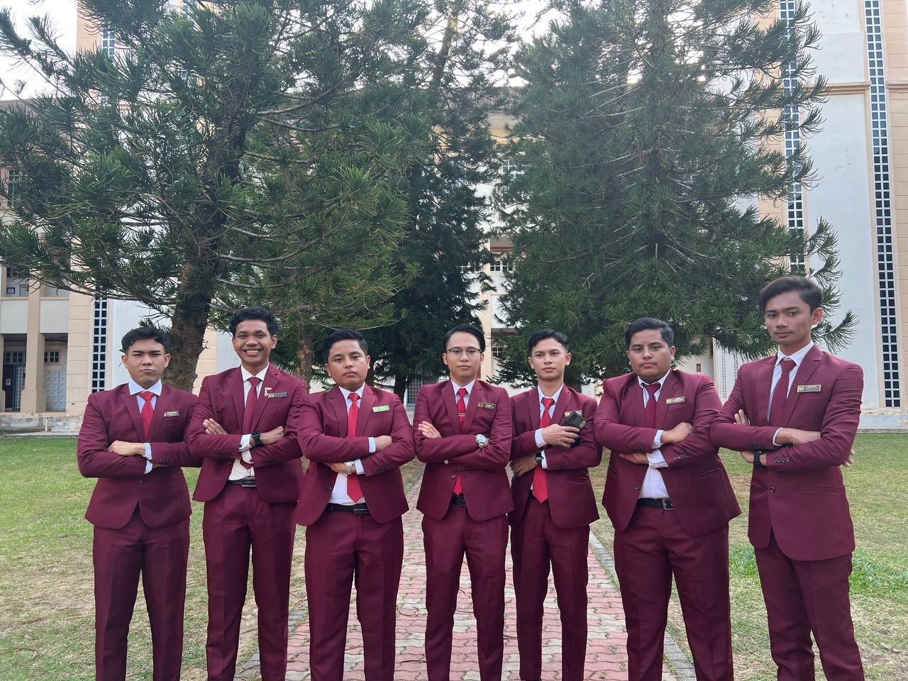
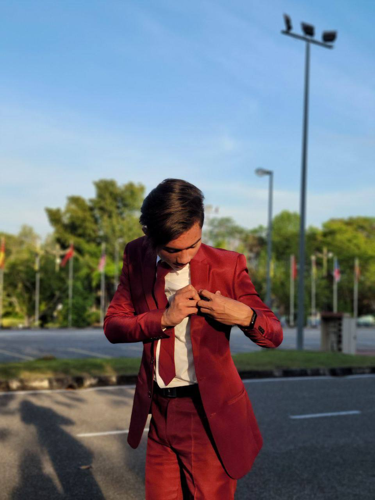
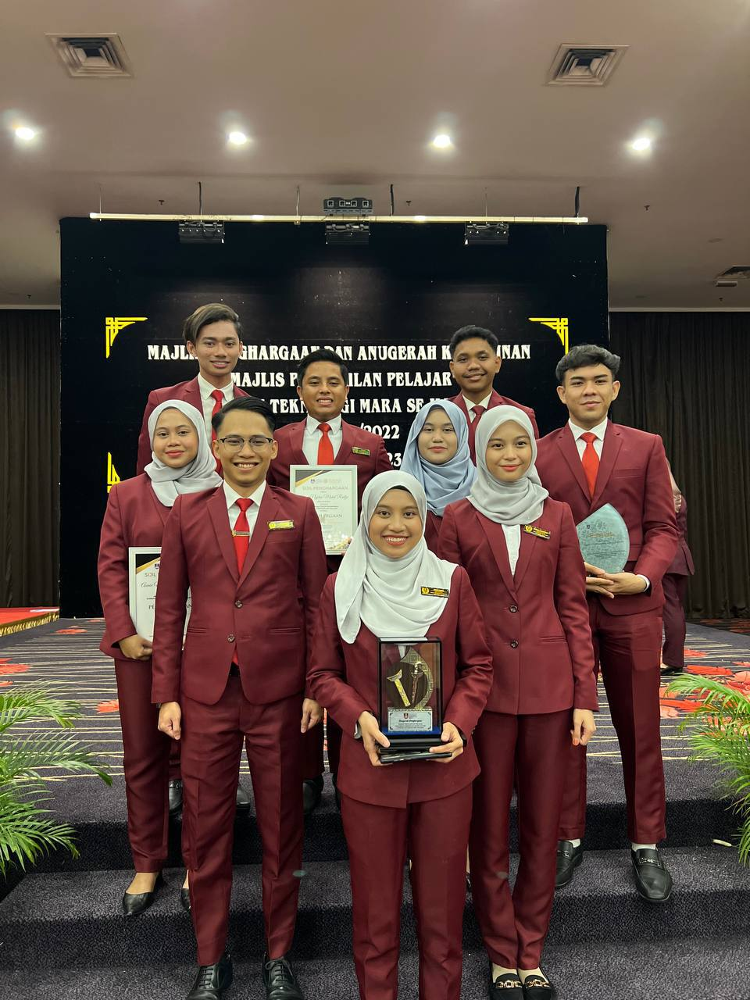

| HOMPAGE | ABOUT ME | EXPERIENCE | EDUCATION | MY FAMILY | GALLERY | SOCIAL MEDIA |
In the 21 years I have lived in this world, I have gained a lot of experience from what I have been through before. But here is a list of the experiences that changed my life the most. However, there is a lot of story inside every experience. Many sweet and bitter moments have occurred during my life.
| SECRET RECIPE | MPP | ||||
|---|---|---|---|---|---|
| ORGANIZATION | EXPERIENCE | ORGANIZATION | EXPERIENCE | ||
| My total work experience with this company is about 8 months. During this period, I worked as a frotliner for about 3 months during the COVID-19 pandemic. I lost my allowances and my overtime work at that time. |

   |
It's an honour to be in this organisation, which is the highest organisation on campus. In the Students Representative Council (MPP), I bring the voices of the students to the management of UiTM. This is to ensure that we, as students, can get our privileges. I was in the organisation for 1 year, which is 2 semesters. As a part of MPP 2021–2022, I was in Exco Protocol, Networking, and Sponsorship. |
    |
||
Below are some of the videos during I joined the organizations. a lot of memories that we createdd together. Full of love, mixed feeling and much more.
✨
✨